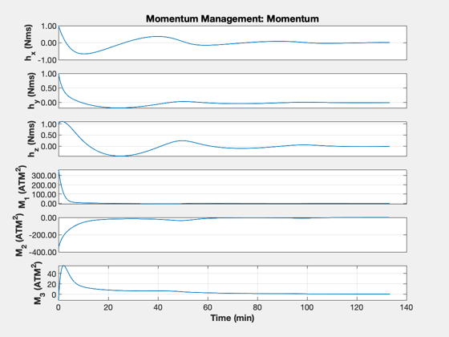
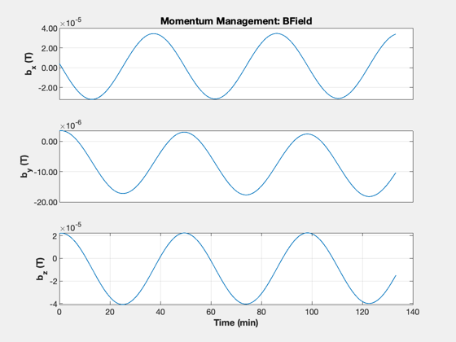

Demonstrate simple dipole based momentum management
This uses projection to get the best fit between the available dipoles and the desired momentum unloading torque.
---------------------------------------------------------------------- See also Plot2D, TimeLabl, RK4, Date2JD, MomentumUnloading, RHSMomentum, Period, BDipole ------------------------------------------------------------------------
Contents
%------------------------------------------------------------------------ % Copyright (c) 2010, 2021 Princeton Satellite Systems, Inc. % All rights reserved. %------------------------------------------------------------------------ % Since version 9. % 2021.2 Now uses the torque from the torquers in the inertial frames. % Now uses TimeHistory, instead of Plot2D %------------------------------------------------------------------------
Constants
secInDay = 86400;
Simulation duration
tEnd = 8000;
Time step
dT = 1; nSim = ceil(tEnd/dT);
The momentum to be removed
h = [1;1;1]; % Nms
Start Julian date
jD0 = Date2JD([2012 4 5 0 0 0]); xPlot = zeros(10,nSim);
Momentum unloading gain
gain = 0.01;
Orbit
sMA = 7000; % km inc = 0.8*pi/2; % rad t = (0:nSim-1)*dT; r = RVOrbGen([sMA inc 0 0 0 0],t);
Run the simulation
jD = jD0 + t/secInDay; for k = 1:nSim % Magnetic field - the magnetometer output is proportional to this b = BDipole( r(:,k), jD(k) ); % Unloading in the inertial frame [tMM, m, ang] = MomentumUnloading( b, gain, h ); % A time step with 4th order Runge-Kutta h = RK4( @RHSMomentum, h, dT, t(k), tMM ); % Store for plotting xPlot(:,k) = [h;m;b;ang*180/pi]; end
Plotting
% Y-axis labels yL = {'h_x (Nms)' 'h_y (Nms)' 'h_z (Nms)'... 'M_1 (ATM^2)' 'M_2 (ATM^2)' 'M_3 (ATM^2)'... 'b_x (T)', 'b_y (T)' 'b_z (T)' '\theta (deg)'}; % Plotting utility TimeHistory( t, xPlot(1:6,:), yL(1:6), 'Momentum Management: Momentum' ); TimeHistory( t, xPlot(7:9,:), yL(7:9), 'Momentum Management: BField' ); 
RHS for momentum in the inertial frame.
function hDot = RHSMomentum( ~, ~, torque ) hDot = torque; end %--------------------------------------